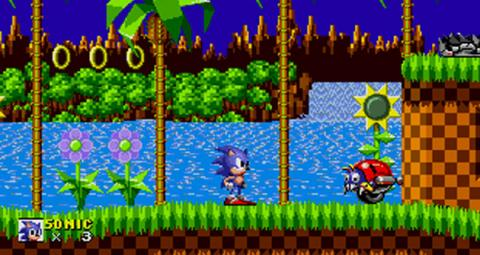

La revolución de las 3D

A principios de los años 90 las videoconsolas dieron un importante salto técnico gracias a la competición de la llamada "generación de 16 bits" compuesta por la Mega Drive, la Super Nintendo Entertainmet de Nintendo, la PC Engine de NEC, conocida como Turbografx en occidente y la CPS Changer de (Capcom).
Esta generación supuso un importante aumento en la cantidad de jugadores y la introducción de tecnologías como el CD-ROM, una importante evolución dentro de los diferentes géneros de videojuegos, principalmente gracias a las nuevas capacidades técnicas.
Rápidamente los videojuegos en 3D fueron ocupando un importante lugar en el mercado, principalmente gracias a la llamada "generación de 32 bits" en las videoconsolas: Sony PlayStation y Sega Saturn (principalmente en Japón); y la “generación de 64 bits” en las videoconsolas: Nintendo 64 y Atari jaguar. En cuanto a los ordenadores, se crearon las aceleradoras 3D. La consola de Sony apareció tras un proyecto iniciado con Nintendo (denominado SNES PlayStation), que consistía en un periférico para SNES con lector de CD. Al final Nintendo rechazó la propuesta de Sony, puesto que Sega había desarrollado algo parecido sin tener éxito, y Sony lanzó independientemente PlayStation. Por su parte los arcades comenzaron un lento pero imparable declive según aumentaba el acceso a consolas y ordenadores más potentes.
>En PC eran muy populares los FPS (juegos de acción en primera persona) como Quake (id Softare), Unreal (Epic Megagames) o Half-Life (Valve), y los RTS (juegos de estrategia en tiempo real) como Command & Conquer (Westwood) o Starcraft (Blizzard). Además, conexiones entre ordenadores mediante internet facilitaron el juego multijugador, convirtiéndolo en la opción predilecta de muchos jugadores, y fueron las responsables del nacimiento de los MMORPG (juegos de rol multijugador online) como Ultima Online (Origin). Finalmente en 1998 apareció en Japón la Dreamcast (Sega) y daría comienzo a la “generación de los 128 bits”.
